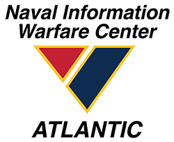

About Me
 My college academics began with two years at Mississippi Gulf Coast Community College. From the fall of 2012 to the fall of 2014, I went to both the Harrison County and the Jackson County Campuses. While attending, I persued (but did not attain) a Bachelor of Science.
My college academics began with two years at Mississippi Gulf Coast Community College. From the fall of 2012 to the fall of 2014, I went to both the Harrison County and the Jackson County Campuses. While attending, I persued (but did not attain) a Bachelor of Science.
 In the spring of 2015, I switched majors and transfered to the University of Southern Mississippi Gulf Park Campus. Here, I learned various programming langauges and technologies. My favorite classes were Artificial Intelligence, Database Management Systems, and Algorithms.
In the spring of 2015, I switched majors and transfered to the University of Southern Mississippi Gulf Park Campus. Here, I learned various programming langauges and technologies. My favorite classes were Artificial Intelligence, Database Management Systems, and Algorithms.
 In the summer of 2018, I had the opprotunity to intern with the National Data Buoy Center located within NASA John C. Stennis Space Center, Mississippi. My internship project specifically dealt with helping the National Oceanic and Atmospheric Administration's main operations for gathering weather data for public use. Here, I gained my first real world software development experience by creating a database back end using MariaDB and testing it using the Eclipse IDE for the Java Programming language. In addition, I also created supporting charts and graphs of bouy coordinates using MATLAB. In my last week, I gave a presentation in front of the NDBC staff where I demonstrated some of the database functionalities along with all supporting front end test code and any other graphs, or charts which I had produced.
In the summer of 2018, I had the opprotunity to intern with the National Data Buoy Center located within NASA John C. Stennis Space Center, Mississippi. My internship project specifically dealt with helping the National Oceanic and Atmospheric Administration's main operations for gathering weather data for public use. Here, I gained my first real world software development experience by creating a database back end using MariaDB and testing it using the Eclipse IDE for the Java Programming language. In addition, I also created supporting charts and graphs of bouy coordinates using MATLAB. In my last week, I gave a presentation in front of the NDBC staff where I demonstrated some of the database functionalities along with all supporting front end test code and any other graphs, or charts which I had produced.
 After my internship, I returned to USM and graduated with my Bachelors of Computer Science in the spring of 2019. In March of 2020, the COVID-19 pandemic began and there was a significant gap of myself not being able to work. However, within November of 2020, I managed to secure a software development job with my current employer, Goldbelt, where I work with a Department of Defense contract for the NWIC (Naval Warfare Information Center).